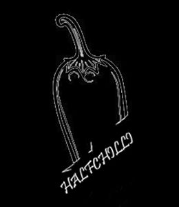

What is Super Mario?
Super Mario Bros 1 [NES] is a platformer game where players control Mario to rescue Princess Toadstool from Bowser. Players navigate through side-scrolling levels filled with obstacles, enemies, and power-ups.
The goal is to jump, run, and defeat enemies while avoiding traps, collecting coins, and reaching the flagpole at the end of each level. With iconic 8-bit graphics and simple controls, the game tests reflexes, timing, and memorization as players progress through increasingly difficult stages.
Controls
Key A – Move Mario to left.
Key D - Move Mario to right.
Key W - Jump.
HalfChilli Members

Designer: Jia Hao Zhao Deng
Designer: Zhe Hao Li
Programmer: Erik Argemí Chinchilla
Programmer: Adrià Puerto Pérez